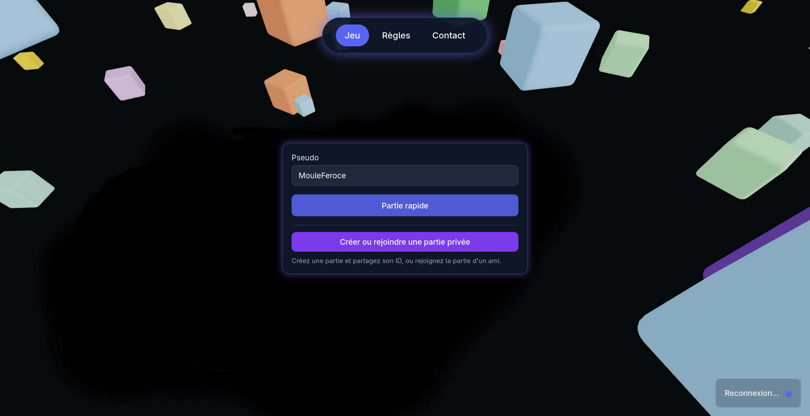
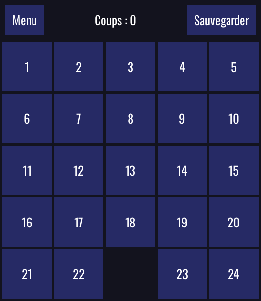

Présentation
NOM
Girard
PRÉNOM
Jules
ÂGE
STATUT
Étudiant ingénieur
Actuellement en 2ème année de cycle ingénieur à l'ISIMA (Clermont Auvergne INP).
Passionné par l'informatique, en particulier les réseaux et l'administration système. J'héberge chez moi quelques applications sur un serveur Proxmox
J'ai aussi pour passion la domotique et les objets connectés. J'aime développer des programmes embarqués bas niveau et faire de l'impression 3D sur mon temps libre.
Projets
Cookie Clicker — Backend
Backend d'un cookie clicker développé en C# avec .NET.
Architecture Entity / Controller / Service, communication via API REST et WebSocket.

Serveur Proxmox
Serveur de virtualisation Proxmox hébergé chez moi. Il me permet d'héberger mes différents services et machines virtuelles pour mes projets personnels.
Projet C / SDL - Jeu de labyrinthe
Projet de fin de 1ère année d'ingénieur. Jeu de labyrinthe développé en C avec la bibliothèque SDL.
Implémentation d'algorithmes de parcours de graphes : DFS, BFS, Dijkstra, A*. Jeu jouable à la manette.

Lenia
Simulation de vie biologique — automate cellulaire continu en Python, amélioration du jeu de la vie de Conway. Projet de fin de 2ème année de classe préparatoire.

Jeu de Taquin
Jeu de taquin avec interface graphique développé en C avec la bibliothèque SDL.
Gestion de parc immobilier
Site web de gestion de parc immobilier développé en 2023. Architecture MVC, modélisation de la base de données et rédaction des requêtes SQL.
Contact
- Mail : jules.girard@etu.isima.fr
- Gitlab (Étudiant) : @jugirard3
- Github (Perso) : @JulesGrd